Jupiter User's Guide
Takuya Yamashita,
Hongbing Kou
Collaborative Software Development Laboratory
Department of Information and Computer Sciences
University of Hawaii
takuyay@hawaii.edu
Last Update: 09/24/2005 10:30 PM

Content
- Introduction
- Installation
- Review Perspective
- The Jupiter Review Process
- Review ID configuration defaults
- Configuration Phase
- Individual Review Phase
- Team Review Phase
- Rework Phase
- Preference filter configuration
- Item Reference
1. Introduction
Why use a review tool?
Why should you use a review tool? There are a few reasons:
- Review can find many faults during requirements, design and coding;
- Early detection of errors can improve productivity;
- Review helps members of the team learn about other parts of the system, and can increase their overall programming skill.
Both review and testing are complementary and should be a part of a high quality software development process. Many studies have shown the effectiveness of review for error detection:
- "Fagan (1976) performed an experiment in which 67 percent of the system's faults eventually detected were found before unit testing using inspections."
- "Ackerman, Bushwald, and Lewski (1986) noted that 93 percent of all faults in a 6000-line business application were found by inspections."
- "Weller (1993) examined data from three years of inspections at Bull Information Systems. Measurements from almost seven thousand inspection meeting included information about 11,557 faults and 14,677 pages of design documentation."
Shari Lawrence Pfleeger, "Software Engineering : theory and practice", 2nd ed.
While most forms of review will detect at least some errors, your overall effectiveness will vary depending upon your approach and objectives. The goal of the Jupiter project is to provide a simple and convenient approach to code review for users of the Eclipse integrated development environment.
Why use Jupiter?
Some of the features of Jupiter include:
- open source - Jupiter uses the CPL License.
- free - Jupiter is distributed free of charge.
- IDE integration - Jupiter is based upon the Eclipse plug-in architecture.
- Cross-platform - Jupiter is available for all platforms supported by Eclipse.
- XML data storage - Jupiter stores data in XML format to simplify use and re-use.
- CM repository - Users of Jupiter share their data files the same way they share their code--using CVS or some other CM repository.
- Sorting and searching - Jupiter provides filters and sorting to facilitate issue review.
- File integration - Jupiter supports jumping back and forth between reviews and source code.
History of Jupiter
Jupiter is the result of over ten years of research of software review tools and techniques by the Collaborative Software Development Laboratory at the University of Hawaii. In the early 1990's, we developed CSRS (Collaborative Software Review System). CSRS provided sophisticated support for software review, including a configurable review process modeling language, a back-end hypertext database for persistency, an Emacs-based user interface, and fine-grained metrics collection. While extremely sophisticated, CSRS was complicated to install, use, and maintain, all of which hindered its adoption. In the late 1990's, we developed a much simpler code review system as part of the Leap toolkit for software engineering measurement and analysis. This tool was Java-based and independent of any editor. While much simpler to use, its lack of integration with a software development environment made it less functional and created more overhead for users. Jupiter is our third generation approach. With Jupiter, we are exploiting the Eclipse IDE framework to provide highly usable code annotation that is much simpler to install and use than CSRS. Jupiter implements a very simple, lightweight "process" for code review that should suffice for most users. Rather than incur the overhead of a back-end database for persistency, which we learned will greatly hinder adoption, Jupiter stores review comments in simple XML files which developers are responsible for managing and sharing via their configuration management system. In other words, Jupiter files must be managed and shared just as source code files must be managed and shared. Finally, rather than build metrics collection and analysis directly into Jupiter, we developed a Jupiter sensor for the Hackystat software engineering measurement system. The sensor allows review metrics to be unobtrusively collected and sent to the user's account at a Hackystat server, where it can be combined with other software engineering metrics collected for this user and their development group. Our hope is that the design of Jupiter hits a "sweet spot" in the many trade-offs that must be made between functionality and usability in code review, one that makes it useful to large segment of the software engineering community.
2. Installation
The best way to install Jupiter is to use the Software Update mechanism in Eclipse. This feature enables you to install or update Jupiter easily when updates to the package occur.
Select "Help | Software Updates | Find and Install..", check " Search for new features to install", and then add update site, clicking on the "Add Update Site" button. Provide a name such as "Jupiter Update Server" and use the URL http://csdl.ics.hawaii.edu/Tools/Jupiter/Download.

Check the new created Jupiter site, then follow the wizards to complete the installation process.
3. Review Perspective
The Jupiter plugin provides a new perspective called "Review". You can open the perspective by selecting "Window | Open Perspective | Other... | Review".
-
Review Perspective - provides Review Table and Review Editor windows.
- Review Editor - Supports entry of new Review Issues. Typically, you will place the cursor (or select a region of text) where you wish to document an issue, right-click, and select "Add Jupiter Issue".
- Review Table - Supports display and modification of already created issues. The review table helps users to see a summary of all the review issue entries at glance, to switch review phase, to sort by item category by clicking the header of a column name, and filter by certain item conditions.
- Phase section - provides the selection of review phases such as individual, team and rework phase. The phase selection Icons are located in the main tool bar and the review table's tool bar. The item categories (columns) in the review table and the the tab in the review editor will be changed corresponding to the phase selection. This will optimize your review for each review stage.

4. The Jupiter Review Process
A code review in Jupiter involves the following four step process:
1. Configuration. In this step, you define a new "Review ID" that represents this code review. Every Jupiter code review is associated with a single Eclipse project. In the configuration step, you also specify the files in the Project that should be reviewed, IDs for the people who should perform the review, that types of issues that can be raised during the review, and the location in the Project directory where review data files generated during the review should be stored.
This configuration information is stored in a file called ".jupiter" in the top-level directory of your Project. The .jupiter file contains information about all of the Code Reviews (each with their own unique ID) associated with this Project.
Once the leader of the code review has finished configuring a new Review ID to represent this code review, she must commit the .jupiter file to the configuration management system (so that it is now available to all reviewers of the code). She will then typically send out an email announcing the code review, indicating the Project upon which the review is to be performed and the Review ID, and finally reminding members to update their local repository in order to get the .jupiter file containing the configuration information.
2. Individual Review. During this phase, each person doing the review works by themselves to review the specified files and create issues. This is easy to do in Jupiter: you just move the cursor to the place in the code where you see an issue (or select a region of code), right-click, and select "Add Jupiter Issue". Your issues are saved into an XML file whose name contains the review ID and your Jupiter user name for this review. This file has the suffix ".review", not ".xml", even though it is internally in XML format. The .review files are saved into a subdirectory in the Project directory that was specified during the configuration phase.
During the individual review phase, Jupiter shows you only the issues that you have created for this particular Review ID.
Once you have completed your personal review of the code, you must add the review file to the configuration management repository so that your comments are available during the Team Review Phase.
3. Team Review Phase. Once everyone has created their individual review files, it is time for the group to go over the work together. This is typically done as follows: one person updates their local workspace to obtain copies of all of the individual review files, then brings up Eclipse and enters the Team Review Phase. During this phase, all of the issues created by all members of the team are available for display, editing, or deletion.
Depending upon your needs and goals, you could go through the issues member-by-member, or go through each file, looking at all of the issues in order by location in the file, or even sort the issues by severity and tackle the most important ones first. Jupiter supports all of these methods and allows you to change your approach at any time during the Team Review.
At the conclusion of Team Review, the modified review files should be committed back into the configuration management repository so that the results of the Team Review are available for the next phase, Rework.
4. Rework Phase. During rework, the author of the code under review (or other members of the team) go through the issues as finalized during the Team Review Phase and make corrections to the code as necessary. They can update each issue to indicate its final status and what they did to make the correction.
At the conclusion of the rework phase, the review files should once again be committed to the configuration management repository so that the outcome of review is available to everyone on the team and permanently stored as part of the project records.
5. Review ID configuration defaults
For teams that perform many reviews, it can become tiresome to configure a review ID from scratch each time. To simplify this process, Jupiter provides a "Master" review ID that is stored in the property.xml file in the Jupiter plugin directory. The settings stored in this DEFAULT review ID for reviewer names, issue types, the review file directory, and so forth become the default values when creating regular review IDs. Thus, by configuring the special DEFAULT review ID, you can provide values to be used each time you create a normal review ID.
Note that each project has a different DEFAULT review ID (see below), and that the DEFAULT review ID can not deleted from the review ID list.
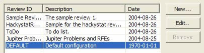
6. Configuration Phase
The main purpose in this phase is to define a new review. You specify the review ID for a set of reviewing files, a set of reviewers, the author of the review session (ID), a review file storage, item entries, default items, and filters.

- Review Files - Specifies the files to be reviewed by reviewers. By specifying a set of review files, you help focus the review on a small part of the system. These files are listed in the jump icon in the table view.
- Reviewers - Specifies the reviewers who examine the review files. The issues generated by each reviewer for a given review ID are stored in their own file.
- Author - Specifies the author of this review. By default, the review Author is assigned to deal with all of the issues generated during this review.
- Storage - Specifies the review storage directory for all of the files associated with this review ID.
- Item Entries - Specifies the contents of an issue. You can customize the set of Type, Severity, Resolution, and Status fields.
- Default Items - Specifies the default values for fields when a new issue is created.
- Filters - Specifies the filters to be applied when displaying issues. This is particularly useful during the Team and Rework phases.
Add a new review ID
To add a review ID, you can right click on a project name (the root icon name of each project ) in either "Package Explore" or "Navigator" view, then select "Properties" to show the property window associated with this Project. Finally, select Jupiter to get the Property Window for Jupiter.
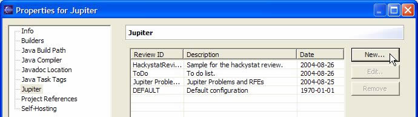
Click "New.." button to open new Review ID wizard. Fill Review ID and Description field respectively. It is recommended that Review ID is a non space word because this ID is used as a part of the review storage file name. Provide a short description of this review for the description field.
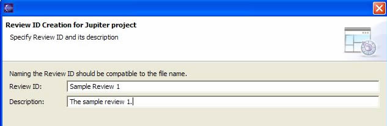
The next step is to specify the files to be reviewed. These files will be listed in the jump button of the table view so that reviewers can easily navigate to the files of interest. Click the "New..." button to open the Review File Selection dialog. Select a set of reviewing files and press "OK".
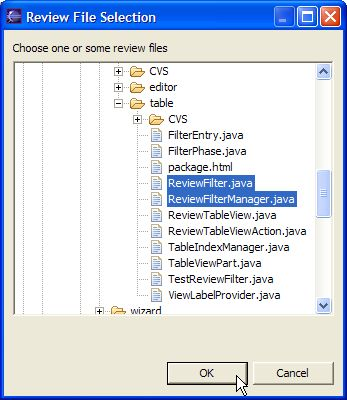
Now you can see the set of reviewing files.
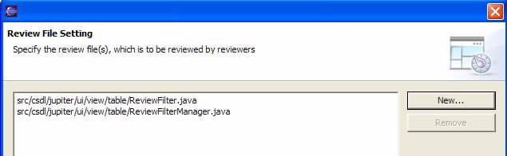
The next step is to specify the set of reviewers. These reviewers are used to create an individual review storage file. So the review issues entered by each reviewers are stored in each reviewer name based storage file. This setting is also used to show the selection list in the "Assigned To" field.
Click "Add..." button on the page to open "Add Reviewer" dialog. It is recommended that you also select a non space word for a reviewer ID. A simple approach is to use the user's account name.

Add as many reviewers as required. Note that the initial set of reviewers are copied from the DEFAULT review ID during the initial creation of this review ID.
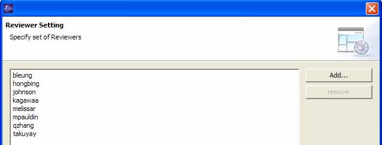
The next step is to specify the author of this review ID. The author of this review ID is automatically the Assigned To person in the team phase.
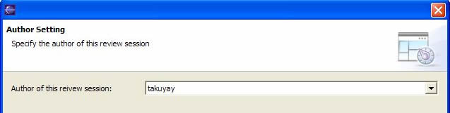
The next step is to specify the field values. You can customize the set of entries for each item field, and the order of the list. These items are listed in the review editor item selection. If you want to set them back to the default item entries, you can click the "Restore" button. The default values are copied from the DEFAULT review ID.
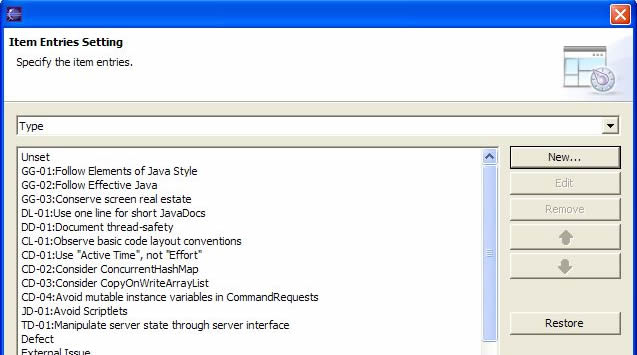
The next step is to specify the default item from the item entries list. This provides the default selection in each field when new issue is entered in the review editor view. For example, if you are adding review issues which relate to the violation which are described in Element of Java style, you can set the type as a default so that the type is set automatically in every new review issue entry.
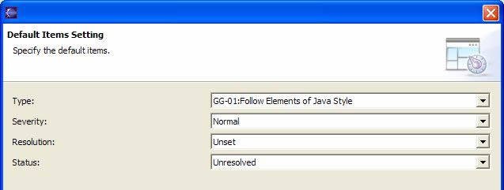
The next step is to specify the review storage file location. During review, each issue is stored in an XML file. This setting enables you to choose the location where these XML files will be stored. To customize the directory location, you can use "/" (forward slash) as file separator. For example, if you want to save xml files under the review/sample directory, you can type "review/sample".
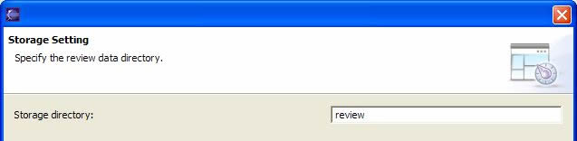
The next step is to specify the filter setting. Each phase has own filter so that you can use filter in different situation. In most case, you can customize the individual, team, or/and rework phase filter setting in order to let you organize team meeting efficiently. Here is an example for each phase:
- Individual Phase
- Reviewer filter (automatic) - Allows the reviewers to be able to see only their own review issues entered. This might help each reviewer not referring anyone's review and bring more review quality in team phase.
- Team Phase
- Resolution filter (unset) - Allows a moderator to just focus on the review issues whose resolution is unset. Any resolution except unset will be filtered after the resolution is changed during the team phase.
- Rework Phase
- Assigned to filter (automatic) - Allows the assigned persons (in most case, the author of the review ID) to be able to just focus on their review issues assigned.
- Status filter (open) - Allows the assigned persons to just focus on the review issues whose status is open. Any status except open will be filtered after the status is changed during the rework phase.
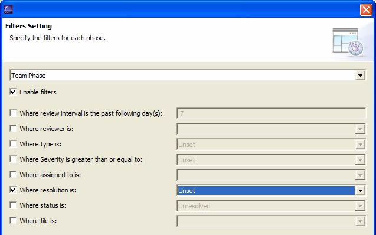
After all settings are done, click the "Finish" button. The ".jupiter" configuration file is created in the project root.
Finally, don't forget commit the ".jupiter" file to your configuration management system. Now you can send out email to announce the review.
Remove a review ID
To remove a review ID, you can select the removing review ID, and click the "Remove" button. Please note that deleting the review ID causes all related review files to be removed as well.
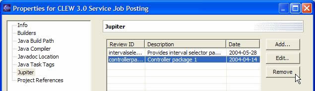
The following seven "controllerpackage1" related review file will be removed if the review ID were deleted.
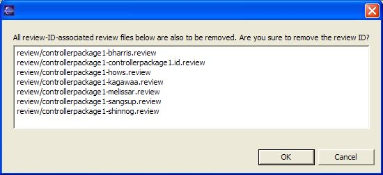
7. Individual Review Phase
After configuration, it's time to add review issues. First, update your Project from the configuration management system so that you get the .jupiter file containing this review ID. Then, select the Jupiter Perspective, and select "Individual Phase" mode.
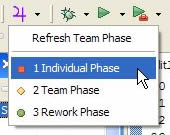
You are then prompted to select a Project, a Review ID and a Reviewer ID, which identifies what you are working on, who you are, and where the data you generate during this review should be stored. If you don't see the correct Project listed, cancel, open the correct Project, select it, then select the Individual Phase mode again.
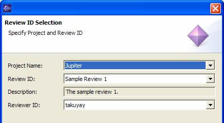
The Jupiter issue view contains the following icons.
Jump Icon - Jump to the specific source code that the selected issue refers to.
Edit Icon - Edit the selected issue
Add Icon - Add a new issue.
Remove Icon - Remove the selected issue.
Filter Icon - Filter the issue list.
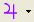 Phase selection Icon - Refresh the table or change phase mode.
Pull down Icon - Contains the preference and property settings.
If the author of the review ID specify the reviewing files, the files are listed in the jump icon. Click the small downward triangle icon next to the jump icon, select one of the review file which the author want you to take a look at. you can jump to the target file and start review seamlessly.
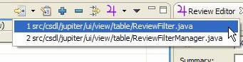
To add a review issue entry, you must click on "Add Jupiter Issue", which is available in several places:
- Right-click on the Compilation Unit (Java file) in the Package Explore of the Java Perspective.
- Right-click on the members in the Outline pane of the Java Perspective.
- Right-click on the Java source code in the Java editor of the Java Perspective.
- Click the blue plus icon on the table view tool bar - Note that the review issue entered by this will not be associated with a file so that you can not use jump function. Instead, this will be used for the review comments that concern design level such as system design, document, and so forth.
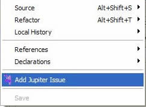
For example, let's try to pick some area in a Java source code. select a text region there, right-clck and select "Add Jupiter Issue". The small text at the top of the window identifies that this issue has been raised by "kagawaa", the file that the issue is associated with, and the line number. If you select a region of the source code, the selected region is copied to the "Description" field. Note that the "Type" and "Severity" field are required.
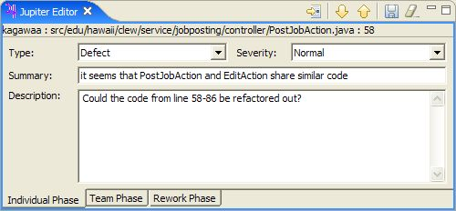
The type field is used to identify the type of the review. At this point, whatever type you select is tentative--the final decision about whether an issue is really a "defect" or not (for example) will be made during the Team Review Phase. So just make your best guess for now.
The severity field is used to identify or prioritize the severity of this issue. For example, you can set severity as "Trivial" for a coding standard violation such as using variable name as "msg" (This should be corrected as "message").
The description field gives the area in which you want to comment something. Since you select a region before right-clicking on the source code, the selected part is automatically copied to the description field. After filling out the necessary information, Click the save Icon in the right upper side of the window to save the issue.
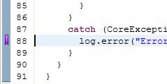
After saving the review issue, you can see the purple marker in the editor ruler, which indicates that there is an issue associated with this region of the file.
Finally, don't forget to commit your .review file to the CVS. The file is located in the directory which was specified during the configuration phase.
8. Team Review Phase
In this phase, team members review all of the issues that have been generated for a given Project and Review ID.
A well filtered view will save you a great deal of time in the group meeting. To begin the Team Review Phase, click the "Open Jupiter Issue View" icon on the main tool bar (the purple '4', which is the Greek symbol for Jupiter). If the icon is not available, select "Customize Perspective", then click on the "Commands" label to display the Commands group, then click "Review". Once that is accomplished, the following pull-down menu should be available:
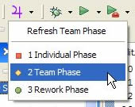
After clicking the purple "Team Review" mode button above, the review ID selection page will pop up. If the correct Project is not listed, then cancel this page, select the project in the "Navigator" or "Package Explore" pane, and then select the "Team Phase" mode again. After making sure the project name is correct, you can select the review ID and reviewer ID. Choose your own reviewer ID and the appropriate Review ID for this review session.
To see each issue, you just click on a row in the Review Table, which displays the corresponding issue in the Review Editor. If you edit a pre-existing issue, be sure to click the "Save", "Next", or "Previous" button. All three buttons save the modified issue. If you want to see what the actual source code that the issue refers to, double click on the particular issue row.
The Assigned To field contains the author of the review ID as a default, but you can change this to any member of the review team if that is more appropriate.
An important part of the Team Review phase is to set the "Resolution" field. This field records the group's consensus regarding the current issue--does it actually need fixing? Is it actually a defect after all?
The Annotation field allows you to add supplemental information about this issue resulting from discussion during the Team Review Phase.
You can make use of the "Next" and "Previous" yellow arrow icons to move back and forth along the issue list.
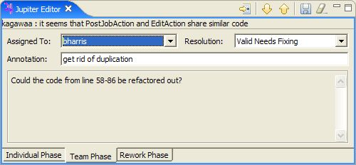
Finally, the "Jump" bottom on the left side of either the Jupiter editor view or the Jupiter issue view enables you to retrieve the source code associated with this issue at any time.
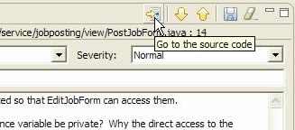
Jupiter also allows you to display issues in read-only form using the purple marker fields in the source code editor.

If you single-click on the purple marker in the left hand side of the text editor, you can see the review issue summary in the resolution selection window with the purple marker. When you select the issue summary, you can see the description of the review issue in the right hand side. To see the full information of the review issue, you can just single-click on the review summary, then the review issue will be filled in the review editor view.
Note that markers obey the current filter settings. For example, if review issues are filtered to only those containing "Unset" in the Resolution field, then the marker for an issue will disappear as soon as its Resolution field is changed to another value such as "Valid-NeedsFixing". This is a good way to keep track of the issues that you haven't yet dealt with during the Team Review Phase.
Finally, don't forget to commit the modified .review files to your configuration management repository at the end of the Team Review Phase. These files are located in the review directory which you specified during the configuration phase.
9. Rework Phase
After the team review phase, the Jupiter plugin can help you work through the fixes to the code identified through the review. For this rework phase, you might want to see which issues are assigned to you, and which issues you have not done yet so that you can work on what you have to do efficiently.
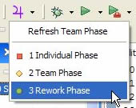
You can select the "Rework Phase" mode and select the proper review ID and reviewer ID.
In rework phase, the Jupiter editor view contains the status, resolution, and revision field.
Status field provides the status of the issue. You can change the status from "Unsolved" to "Solved" after fixing the issue. You might want to fix the issue in a different way than was suggested during the review after examining it more carefully. In this case, you can provide a comment documenting your new approach in the Revision field.
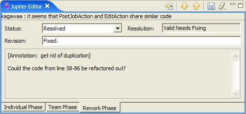
Once again, make sure you commit your changed .review files to your configuration management repository.
10. Preference filter configuration (for power users)
Jupiter has two kind of filter setting: Preference filter setting (preference level) and Review ID filter setting (property level). Underling idea for the Review ID filter is that the author of a review ID can control all filters for each phase. This will save a time for customizing filters for each phase in the author's point of view. However, power users (or especially reviewers in the individual phase) might feel lame if all filter setting is under the control of the author). The object for the preference filter is for power users to control filter in their Eclipse.
The review ID filter determines the filter setting during the review session. so if review ID was changed to another, the filter setting is changed as well. This filter will be determined by the author of a review ID so that the reviewers for the review ID do not need to worry about the filter at all.
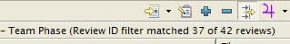
On the other hand, the preference filter determines the individual Eclipse environment filter setting regardless of review sessions (review IDs).
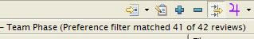
If you check the "Overwrite the property's filter setting" in the preference filter setting, then you can use your own filter regardless of review session.
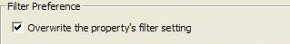
If you want to use review ID filter setting in team phase, for example, you have to disable (uncheck) the "Overwrite the property's filter setting". Otherwise, the review ID filter setting will not be reflected to the review id session.
11. Item Reference.
Type
- Unset - Not set.
- Coding Standards
- Violating language coding standards - A certain part of implementation does not follow the language or organization coding standards. e.g. Java coding standards, C/C++ coding standards, The elements of Java style, Effective java.
- Program Logic
- Wrong algorithm - The entire logic in a method is wrong and cannot provide the desired functionality.
- Wrong expression - An expression (in an assignment or method call) computes the wrong value. A boolean expression is wrong. Objects or their names is confused. The wrong method, attribute, or variable is used.
- Initialization error - Failure to set a data item, loop variables, initialize pointers, failure to clear flags
- Calculation error - Outdated constants, wrong parentheses, truncation, incorrect conversion from one
- Control flow error - Programs runs amunk, stops, loop error.
- If then else, multiple cases error - Wrong inequalities (e.g.,> instead of >=), Comparison sometimes yields wrong result
- Optimization
- Lacking optimal design - Design will adversely affect the product's performance.
- Lacking optimal method - Multiple calls to procedures to be replaced by fewer calls in the code.
- Lacking optimal usage -
- Usability - Panels, messages, help being reviewed are in error. Their design/implementation will adversely affect usability of the product.
- Clarity - Clarity needed.
- Clarify design (of required functionality) - Several requirements are designed in one unit (class).
- Clarify implementation - A certain part of a design is not clearly implemented.
- For e.g.., If the test cases / comments in source code, variable naming / paragraph naming etc doesn't give clarity to the reviewer.
- Missing - One of the followings is missed.
- Missing design (of required functionality) - A certain requirement is covered nowhere in the design at all.
- Missing implementation - A certain part of a design is not implemented at all.
- Missing error handling - An error case is not handled in the program at all.
- Missing assignment - A single variable is not initialized or updated at all.
- Missing call - A single method call is missing.
- Missing other things. - Other things are missing.
- Irrelevant - One of the followings is irrelevant.
- Irrelevant design (to required functionality) - A required functionality is designed improperly.
- Irrelevant implementation - A certain part of a design is implemented improperly.
- Irrelevant error handing - An error case was handled improperly.
- Irrelevant assignment - A single variable is initialized or updated improperly.
- Irrelevant call - A single method is called improperly.
- Irrelevant other things - Other improper things are found.
- Suggestion- Constructive suggestion.
- Other - Other types that are not fitted above.
Severity
- Unset - Not set.
- Valid Needs Fixing - The review issue provides valid argument and it needs to be fixed.
- Valid Fix later - The review issue provides valid argument, but it is to be fixed later.
- Valid Duplicate - The review issue provides valid argument, but it is raised before.
- Valid Won't Fix - The review issue provides valid argument, but it does not need to be fixed.
- Invalid Won't Fix - The review issue provides invalid argument so that it does not need to be fixed.
- Unsure validity - It is not sure that the review issue provides valid or invalid argument.
Resolution
- Open - A new review issue was opened.
- Resolved - The review issue was resolved.
- Closed - The resolved review issue was closed (approved).
- Reopened - The closed review issue was reopened (had problem again).
Each issue has five different status. The following is the typical story to use them.
- A review issue is open when reviewers post it to Jupiter in the individual phase (Open status).
- An assigned person finishes fixing the issue in the rework phase (Resolved status).
- The person (team leader, or manager) verifies or approves the resolved issue and close it (Closed status).
- The person (team leader, manager, or anybody) finds the issue (or related problem) takes place again (Reopened status).
Last Update: September 24, 2005 10:30 PM